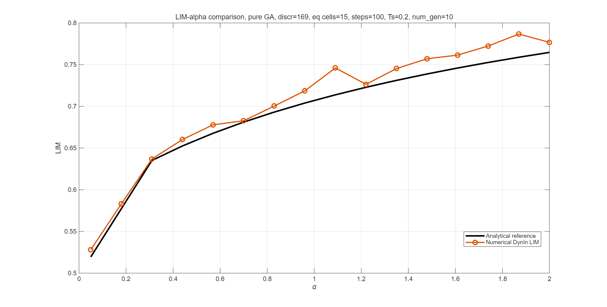
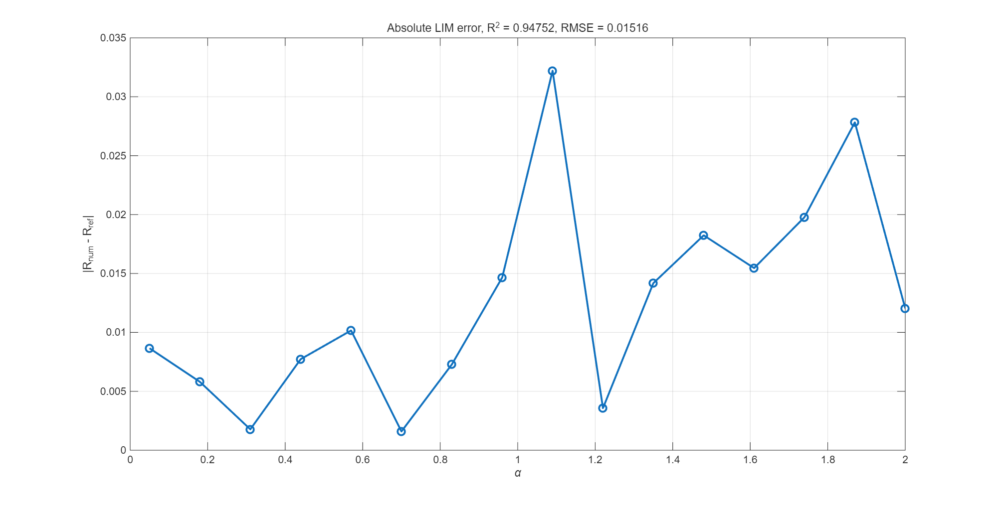
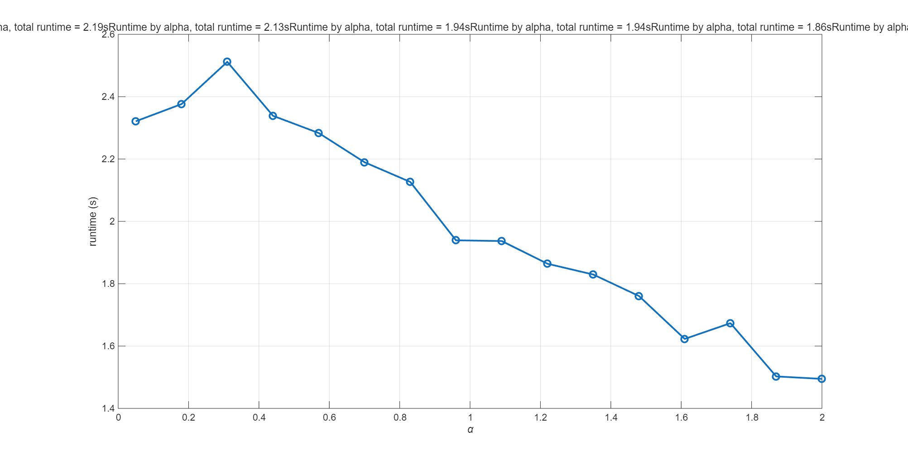

Original DynIn uniform-cell algorithm with pure GA initial-condition selection, type_x0 = 1.
| spaceboundary | [-1 -1 1 1] |
|---|---|
| discr | 169 |
| num_of_cell_around_equilibrium | 15 |
| number_of_steps | 100 |
| Ts | 0.2 |
| num_gen | 10 |
| raw R^2 | 0.94751887 |
|---|---|
| MAE | 0.01255881 |
| RMSE | 0.01516145 |
| total runtime s | 2.32 |
| total runtime s | 2.38 |
| total runtime s | 2.51 |
| total runtime s | 2.34 |
| total runtime s | 2.28 |
| total runtime s | 2.19 |
| total runtime s | 2.13 |
| total runtime s | 1.94 |
| total runtime s | 1.94 |
| total runtime s | 1.86 |
| total runtime s | 1.83 |
| total runtime s | 1.76 |
| total runtime s | 1.62 |
| total runtime s | 1.67 |
| total runtime s | 1.50 |
| total runtime s | 1.49 |
Original compute_LIM_FP:C:\Users\-qian-\Documents\Codex\2026-06-28\github\work\DynIn\DynIn_v1.1.0\functions\compute_LIM_FP.m
| alpha | R_ref | R_num | abs error | runtime s |
|---|---|---|---|---|
| 0.050000 | 0.51943125 | 0.52808537 | 0.00865411 | 2.32 |
| 0.180000 | 0.57731098 | 0.58311133 | 0.00580035 | 2.38 |
| 0.310000 | 0.63516582 | 0.63694026 | 0.00177444 | 2.51 |
| 0.440000 | 0.65256589 | 0.66029240 | 0.00772651 | 2.34 |
| 0.570000 | 0.66772269 | 0.67788616 | 0.01016348 | 2.28 |
| 0.700000 | 0.68113285 | 0.68272558 | 0.00159273 | 2.19 |
| 0.830000 | 0.69313516 | 0.70041372 | 0.00727856 | 2.13 |
| 0.960000 | 0.70397525 | 0.71863637 | 0.01466112 | 1.94 |
| 1.090000 | 0.71383858 | 0.74604090 | 0.03220232 | 1.94 |
| 1.220000 | 0.72286932 | 0.72643773 | 0.00356841 | 1.86 |
| 1.350000 | 0.73118209 | 0.74536232 | 0.01418023 | 1.83 |
| 1.480000 | 0.73886969 | 0.75710969 | 0.01824000 | 1.76 |
| 1.610000 | 0.74600836 | 0.76146666 | 0.01545830 | 1.62 |
| 1.740000 | 0.75266153 | 0.77243767 | 0.01977613 | 1.67 |
| 1.870000 | 0.75888256 | 0.78670875 | 0.02782619 | 1.50 |
| 2.000000 | 0.76471672 | 0.77675485 | 0.01203813 | 1.49 |


